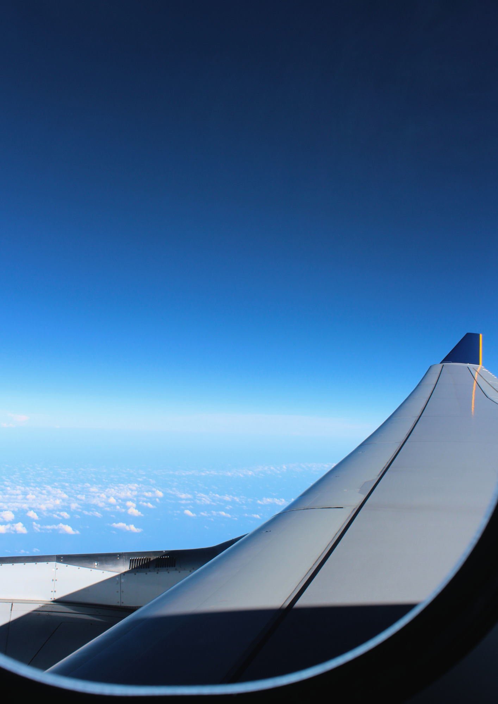

Nordeste
Roteiro Personalizado
Danila Lauro
Julho de 2026

Ato de marcar, registrar ou validar algo; deixar a prova de que atravessou uma fronteira — interna ou externa. carimbar na alma uma nova versão de si: mais expandida, com mais cultura, repertório e experiência de vida. É marcar no coração novas histórias, novos lugares e novas pessoas… carimbos que ficam pra sempre.
Seja bem-vinda, Danila Lauro! O seu roteiro personalizado para o Nordeste é interativo: use os links do menu para navegar entre as seções. Acompanhe cada etapa do planejamento aqui — do perfil viajante ao roteiro dia a dia.
O caminho que vamos percorrer juntas até você embarcar para o Nordeste — cada etapa com prazo definido e entregáveis claros.
Validação do destino, datas, perfil da viagem, expectativas financeiras, passeios e suporte para emissão de passagens.
Em andamento · 26/05 · 12hResumo da viagem com distribuição logística dos dias, bases de hospedagem e curadoria de hospedagem para seleção e reservas.
até 7 dias úteis após as passagensInclui ajustes no roteiro e suporte na reserva de todos os passeios e transportes.
até 10 dias úteis após roteiro macro aprovadoReunião final de alinhamento antes da viagem.
Em breveO máximo do litoral alagoano e pernambucano, com ritmo dinâmico e variedade de destinos.
Voo GRU › MCZ. Chegada, check-in, passeio na orla de Maceió.
Pajuçara, jangada nas piscinas naturais, Orla de Ponta Verde, gastronomia local.
Praia do Francês e Barra de São Miguel, passeio de barco pelo manguezal.
Transfer Maceió › Maragogi ~2h30. Passeio em São Miguel dos Milagres. Check-in.
Galés de Maragogi. Piscinas naturais de corais, snorkel, mergulho.
Maragogi e Antunes.
Transfer Maragogi › Porto de Galinhas ~1h30. Parada em Carneiros. Check-in.
Passeio de jangada nas piscinas naturais, Praia de Muro Alto.
Praia de Maracaípe, tarde livre.
Transfer Porto de Galinhas › Recife ~1h. Primeiro dia de Fenarte.
Fenarte, Olinda (opcional).
Voo REC › GRU.
Experiência mais aventureira incluindo o Xingó, cânion do Rio São Francisco.
Voo GRU › MCZ. Chegada, check-in, passeio na orla de Maceió.
Pajuçara, jangada, Ponta Verde, gastronomia.
Transfer Maceió › Piranhas ~3h. Lancha privativa no Cânion de Xingó. Paredões rochosos, Gruta do Talhado.
Prainha fluvial, mirantes, vila histórica.
Transfer Piranhas › Maragogi ~2h30. Check-in, tarde nas Galés.
Dia completo nas Galés, snorkel.
Transfer Maragogi › Porto de Galinhas ~1h30. Parada em Carneiros.
Piscinas naturais, Muro Alto.
Praia de Maracaípe, tarde livre.
Transfer Porto de Galinhas › Recife ~1h. Primeiro dia de Fenarte.
Fenarte, Olinda (opcional).
Voo REC › GRU.
Recomendação: concentrar a emissão na GOL. Como você já tem aproximadamente 100 mil milhas acumuladas e tem interesse em crescer de status na companhia — e como os valores em milhas ficaram equivalentes às outras companhias, faz sentido estratégico não pulverizar.
Valores consultados em maio/2026 via Smiles (GOL). Disponibilidade e quantidade de milhas podem variar no momento da emissão. A inclusão de bagagem despachada (23 kg) pode implicar milhas adicionais — verificamos juntos na hora da emissão.
Para cada base da viagem, selecionamos hospedagens avaliadas em três critérios — para que a escolha seja fácil e a experiência esteja garantida.
As opções de hospedagem para cada base serão apresentadas assim que as datas estiverem confirmadas — as datas certas são essenciais para garantir disponibilidade e os melhores preços.
Próxima à praia, às atrações e logisticamente bem posicionada para os passeios do roteiro.
Estrutura e nível de serviço alinhados ao seu perfil — sem abrir mão do que importa para você.
Entre experiência e investimento — as opções são organizadas em três níveis para facilitar a comparação.
Nordeste · Julho 2026 · valores estimados, sujeitos a atualização
* Estimativa com base nas opções de roteiro e curadoria apresentadas. Passagens não somadas ao total (emissão em milhas).
O paraíso desconhecido do Nordeste
Alagoas guarda um dos melhores segredos do litoral brasileiro. Das praias urbanas de Maceió com coqueiros e águas calmas, às piscinas naturais das Galés de Maragogi — e ainda a vila intocada de São Miguel dos Milagres, quase sem sinal e inesquecível. Tudo num estado que a maioria dos brasileiros ainda não descobriu de verdade.
Alagoas é o menor estado do Nordeste — com apenas 27.831 km², caberia dentro de São Paulo quase duas vezes. Ainda assim, concentra 230 km de um dos litorais mais bonitos do Brasil.
Maior área de proteção de recifes do Atlântico Sul — 477 km² que abrigam peixe-boi e tartarugas marinhas.
Piscinas naturais com visibilidade de até 10 m, acessadas de jangada. Cor de piscina, fundo de areia clara.
Vila sem sinal e sem grandes hotéis. Mar transparente, areia branca — e a sensação de ter encontrado o que estava procurando.
~300 km de Maceió · day trip longo ou pernoite recomendado
Entre o mar e a cultura
Pernambuco é onde o Nordeste bate mais forte. Porto de Galinhas impressiona com piscinas naturais formadas pelos recifes de coral. Recife e Olinda guardam a memória, a efervescência e o melhor artesanato do Brasil — e chegando em julho, Danila cai de cabeça na Fenarte.
A palavra Pernambuco vem do tupi Paranambuco — "mar furado". Uma referência direta às piscinas naturais formadas pelos recifes de coral que pontuam todo o litoral do estado.
O nome vem do tráfico ilegal de escravos: "chegou mais um carregamento de galinhas da África". Hoje eleita uma das mais belas praias do mundo.
Patrimônio Cultural da Humanidade pela UNESCO desde 1982. Ladeiras, arte e o carnaval mais criativo e irreverente do Brasil.
A maior feira de artesanato do Brasil, realizada em Recife desde 1976, com mais de 500 expositores de todo o país.
A gastronomia de Alagoas e Pernambuco é um verdadeiro banquete nordestino, famoso pelos frutos do mar frescos, peixes, carnes de sol e raízes. Enquanto Alagoas brilha pelas receitas com moluscos locais, Pernambuco destaca-se pela fusão de influências e polo de alta gastronomia.
A culinária alagoana tem grande base nas lagoas (Mundaú e Manguaba) e no litoral, destacando-se por pratos de dar água na boca.
Pernambuco é um dos maiores polos gastronômicos do Brasil. A capital Recife atrai amantes da boa mesa, com pratos marcados pelo forte contraste entre o litoral e o sertão.

Aqui começa seu checklist
e roteiro detalhado,
vamos carimbar?
Junho e julho marcam o inverno nordestino — mas não se deixe enganar pelo nome: as temperaturas ficam entre 26°C e 30°C e o calor continua firme. Em Alagoas, o clima tende a ser mais estável e o mar fica mais calmo, ótimo para as piscinas naturais de Maragogi. Em Pernambuco há mais chances de chuva rápida no período da tarde, especialmente em Recife — nada que impeça os passeios. Um guarda-chuva compacto na bolsa resolve.
Esta seção será atualizada na Etapa 03 do nosso trabalho.

Viajar é carimbar histórias,
Boa viagem!
Este roteiro foi pensado para otimizar deslocamentos, horários e ritmo, garantindo a melhor experiência dentro do tempo disponível. Mas viagem não é um roteiro engessado — é experiência viva. Ajuste o que fizer sentido, prolongue o que encantar e adapte o dia conforme a sua energia.

Nós temos uma filosofia de vida:
"Pelo menos uma vez ao ano conhecer
um lugar que nunca fomos antes"
E o planejamento nos proporciona viver isso.